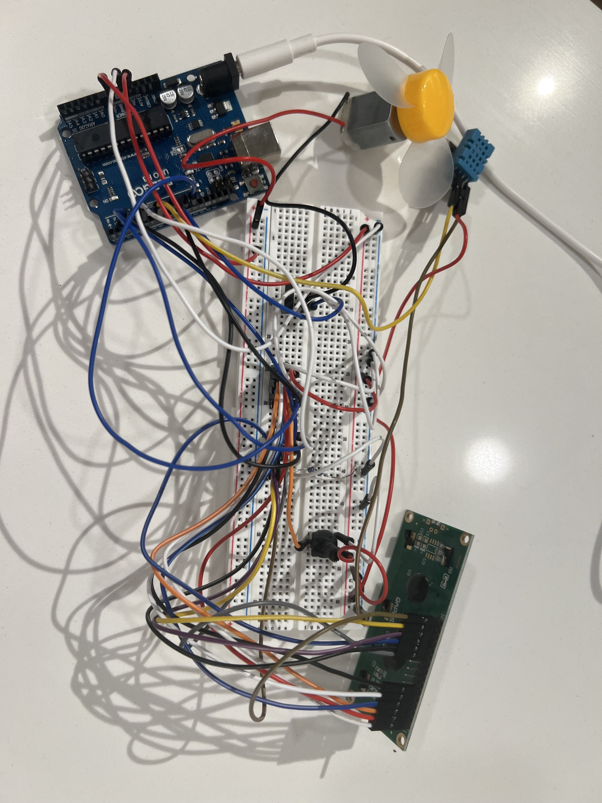

DOZY is a bedside sleep-assistant device designed to automatically adjust your environment for better sleep. It uses a DHT11 sensor to monitor temperature and humidity, displays the information on a 16x2 LCD screen, and activates a cooling fan when the room becomes too warm. An RGB LED provides simple visual feedback based on comfort conditions.
Code used to read the sensor, update the LCD, and control the fan:
#include <DHT.h>
#include <LiquidCrystal.h>
#define DHTPIN 7
#define DHTTYPE DHT11
#define FANPIN 9
DHT dht(DHTPIN, DHTTYPE);
LiquidCrystal lcd(12, 11, 5, 4, 3, 2);
void setup() {
lcd.begin(16, 2);
dht.begin();
pinMode(FANPIN, OUTPUT);
}
void loop() {
float tempC = dht.readTemperature();
lcd.clear();
if (isnan(tempC)) {
lcd.setCursor(0,0);
lcd.print("Sensor error");
digitalWrite(FANPIN, LOW);
} else {
lcd.setCursor(0,0);
lcd.print("Temp: ");
lcd.print(tempC);
lcd.print((char)223);
lcd.print("C");
lcd.setCursor(0,1);
if (tempC < 18) {
lcd.print("Too cold for sleep");
digitalWrite(FANPIN, LOW);
}
else if (tempC > 26) {
lcd.print("Too hot for sleep");
digitalWrite(FANPIN, HIGH);
}
else {
lcd.print("Ideal for sleep");
digitalWrite(FANPIN, LOW);
}
}
delay(2000);
}